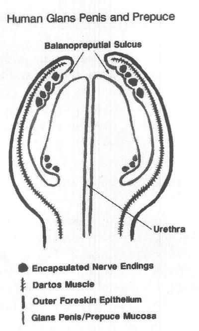
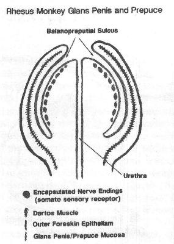
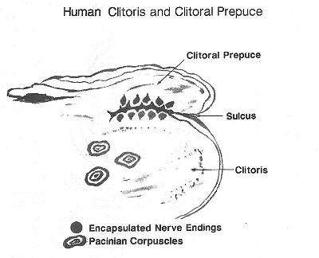

THE CIRCUMCISION REFERENCE LIBRARY
In: Male and Female Circumcision. Denniston GC,
Hodges FM, Milos MF eds.
Kluwer Academic/Plenum Publishers, New York, 1999.
For various reasons, penile and clitoral prepuces have been amputated from children in certain human societies for thousands of years. Although the justifications for male and female circumcision have changed over the last several thousand years, the practice of circumcision has not been examined from the perspective of primate evolution. Why do primates have a prepuce, and what function does it have? The comparative anatomy between human and non-human primates will be reviewed with a specific focus on the sensory innervation of the prepuce and glans.
Since the prepuce is a common feature in the primate external genitalia of both sexes, it is likely that the prepuce has been present and has provided specialised functions for at least the last 65 million years of primate evolution.1 The human penis, in particular, has retained and modified its prepuce over a period of extraordinarily rapid evolution.2 The rapid divergence in external genital anatomy between humans and ancestral apes is thought to have occurred in the last seven million years.
The prepuce provides a complete or partial covering of the glans clitoridis or penis. For over a hundred years, anatomical research has confirmed that both the penile and clitoral prepuce are richly innervated, specific erogenous tissue with specialised encapsulated (corpuscular) sensory receptors, such as Meissner's corpuscles, Pacinian corpuscles, genital corpuscles, Krause end bulbs, Ruffini corpuscles, and mucocutaneous corpuscles. These receptors transmit sensations of fine touch, pressure, proprioception, and temperature.3-13 Although autonomic nerves accompany the sensory nerves in the genitalia, this paper will not discuss their important functions.
The two primary sensory receptors in primate skin are free nerve endings and encapsulated or corpuscular receptors. While free nerve endings (pain, itch, and temperature receptors) are found in most skin, the encapsulated receptors are concentrated in regions that require specialised touch sensitivity, such as at the fingertips, lips, external genitalia, perianal skin, and transition areas between skin and mucous membranes.14 In this paper, corpuscular receptors will be used as a generic term to include Meissner's corpuscles, mucocutaneous receptors, genital corpuscles, and Pacinian corpuscles. All of these receptors have a capsule and an inner core composed of both neural and non-neural elements. Although the Pinkus corpuscle (also referred to as Haarscheibe, or hederiform ending) does not have a true capsule, it is a genital sensory receptor associated with Merkel cells.
The capsule of corpuscular receptors is a continuation of the perineurium and the core includes preterminal and terminal portions of the nerve fibres surrounded by laminated layers of modified Schwann cells (laminar cells). The Meissner corpuscles, genital corpuscles, and mucocutaneous receptors are similar in that there is a complex branching of the nerves within the corpuscular core. In contradistinction, the Pacinian corpuscle has a single nerve through the core, which is surrounded by laminar cells to form an onion bulb configuration.15 It was not until 1991 that the ridged bands of the male prepuce were identified as a concentrated area of corpuscular receptors.16-17 At that time, it was unknown whether the ridged band existed in the female prepuce or in other non-human primates. A later histologic study of the penile and clitoral prepuce, carried out on human and non-human primates, showed that corpuscular receptors are concentrated at the prepuce/glans penis and the prepuce/glans clitoridis interface in humans and rhesus monkeys.18 Surprisingly different patterns of innervation, however, are seen between human and non-human male primates.
|  |  | |
| Figure 1. Human glans penis and prepuce. | Figure 2. Rhesus monkey glans penis and prepuce. |
The rhesus monkey has fewer corpuscular receptors in the prepuce and more corpuscular receptors in the glans. In humans, however, the glans penis has few corpuscular receptors and predominant free nerve endings,19-20 consistent with protopathic sensibility. Protopathic simply refers to a low order of sensibility (consciousness of sensation), such as to deep pressure and pain, that is poorly localised. The cornea of the eye is also protopathic, since it can react to a very minute stimulus, such as a hair under the eyelid, but it can only localise which eye is affected and not the exact location of the hair within the conjunctival sac. As a result, the human glans penis has virtually no fine touch sensation and can only sense deep pressure and pain at a high threshold. This was first reported by the inventor of the aesthesiometer,21 and led Sir Henry Head to make his famous comparison with the back of the heel.22 While the human glans penis is protopathic, the prepuce contains a high concentration of touch receptors in the ridged band. In addition, intraepithelial nerves are identified in the common fused prepuce/glans penis epithelium of the three-month old rhesus monkey. In the female, the prepuce/glans clitoridis interface contains many corpuscular receptors in both humans and rhesus monkeys.
|  |
| Figure 3. Human clitoris and clitoral prepuce. |
The preputial interface between the glans penis and glans clitoridis is an area of specialised innervation.23 Winkelmann's anatomical investigations have identified the prepuce as a primary erogenous zone in humans.24 In other mammals, it is known that the male prepuce is important for normal copulatory function, because surgical removal of the prepuce disturbs normal copulatory behaviour in male mammals,25-26 and similarly alters sexual behaviour in humans.27-28 Most likely, the changes in copulatory behaviour in circumcised male mammals are explained by the sensory alterations caused by preputial loss. In the human penis, the prepuce is known to have ten times more corpuscular sensory receptors than the glans penis.29 Therefore, the amputation of the prepuce results in the loss of the majority of fine-touch neuroreceptors found in the penis, leaving only the uninhibited protopathic sensibility of the artificially externalised glans penis. The imbalance caused by not having the input from the now ablated fine-touch receptors may be a leading cause of the changes in sexual behaviour noted in circumcised human males.30 Animal studies must be interpreted with caution, however, because of the marked difference in genital sensory innervation between humans and many other mammals. In particular, rhesus monkeys, chimpanzees, and baboons would be poor animal models to study behavioural effects of circumcision because of the different pattern of corpuscular receptors in the glans penis and prepuce.
In addition to the changes in sexual behaviour, it has been shown that an infant's response to pain can be altered for years as a consequence of circumcision.31-32 As noted by Taddio, "postsurgical central sensitization (allodynia and hyperalgesia) can extend to sites of the body distal from the wound," suggesting a supraspinal effect.33 How the central nervous system is altered in humans to account for these behavioural changes is not understood, but in addition to central nervous system changes, peripheral nervous system damage is also exhibited by loss of the preputial corpuscular receptors and by amputation neuromas at the circumcision scar.34 This is consistent with the large numbers of nerve bundles in the male prepuce, which range from 6/nm dorsally to 18/nm ventrally. Although Taddio's work suggests a central nervous system change, it is unclear whether circumcision alters sexual behaviour by central nervous system changes, local sensory alterations of the external genitalia or a combination of both central and peripheral nervous system changes. Alteration in penile sensitivity most likely explains the sexual behaviour alteration associated with circumcision. Because of the sexual behaviour changes associated with circumcision, veterinary medicine avoids circumcising breeding stock and carefully repairs preputial damage.35 Non-human primate breeding programs do not use circumcision.
Before discussing the vast diversity of the external genitalia of primates, it is necessary to review the basic theories of evolution. The vast diversity of living organisms is explained by the theory of natural selection, which was put forth by Charles Darwin (and independently by Alfred Russell Wallace) in 1858-1859.36 This theory states that a process of evolution has produced the variation that is documented by the fossil record and among living organisms.37 Darwin states, "This preservation of favourable individual differences and variations, and the destruction of those which are injurious, I have called Natural Selection, or the Survival of the Fittest." In addition to natural selection, Darwin proposed sexual selection to explain why in some species the males have such magnificent ornaments and in some species such impressive weapons. Darwin proposed that either females choose particularly ornate males (female choice), or alternatively, females accept the winner of fights among males (male-male competition). Darwin describes female choice as accepting "not the male which is most attractive to her, but the one which is least distasteful."38-39
Certain secondary sexual characteristics (larger size, large antlers, brightly coloured plumage) appear to provide a breeding advantage, and, likewise, it can be assumed that the primary sexual characteristics of the external genitalia must also provide a reproductive advantage for each species. Stated another way, the characteristics of the male and female external genitalia have evolved over time to produce the most effective system of transferring sperm to ovum. If Darwin is correct, the external genitalia of each species have evolved solely for the purpose of effective reproduction. Since primates have been on earth for at least 65 million years, it can be assumed that the prepuce has been present since the earliest primate ancestors. As all male and female primates retain a prepuce, it can be safely postulated that the prepuce provides a reproductive advantage and is not a disadvantageous trait.40-41 As Diamond has pointed out, "anatomical structures and instincts that promote survival and reproductive success tend to become established (genetically programmed) by natural selection."42
The external genitalia of primates are marked by an astounding variety of specialised structures, but over the past 65 million years, the prepuce has not only withstood the test of time, it has also evolved in its complexity. The survival and further development of the human penile prepuce in the face of the extraordinarily rapid evolution of humans over the last 7 to 9 million years is particularly noteworthy, especially against the background of a fourfold increase in penile size.43
Other than the prepuce, the only other structures of the primate external genitalia that are also present in all primates are the erectile corpora cavernosum of the penile shaft and the clitoris. Since chimpanzees (Pan troglodytes) and Bonobos (Pan paniscus) lack a true glans penis,44-45 the corpora cavernosa and the prepuce are the only two universally common characteristics of the primate penis. Although it is stated that the chimpanzee shares 98.4 percent of its genetic material (similar DNA) with humans, it is unclear why chimpanzees and Bonobos do not retain a bulbous glans penis while rhesus monkeys and baboons do have a distinctive glans penis. It is likewise unclear why chimpanzees share so much common DNA with humans and yet have a single corpus cavernosum. In contrast to chimpanzees, humans, rhesus monkeys, and baboons have paired corpora cavernosa.
Of interest, the penis of most primates, with the exception of humans, Brachyteles, and Langothrix, contains a baculum (os penis). while humans do not have a baculum, a rare congenital os penis has been reported in human males.46 This is assumed to represent atavism, or the appearance of a characteristic found in remote ancestors but not in nearer ancestors. Human penile calcification can also occur in Peyronie's disease, signifying penile pathology occurring at a younger age.47-48
Other structures found in the primate penis include: glans penis spines;49-50 specialised adornments such as lappets that surround the urinary meatus;51 specialised preputial glands (Tamarins); brightly coloured prepuce (Cercopithecus, Mandrillus, Papio, and Pongo); horny papillae of chimpanzees and baboons; distinctive penile curvatures;52-53 and prominent frenulum. Studies suggest that the evolution of these complex penile morphologies has been influenced by female choice,54-56 and that the penile morphology (especially penile spines) may contribute to improved sperm competition.57
The female external genitalia of primates also show a wide variety of characteristics, which include: tumescent sex skins of the vulva; specific preputial glands; well-developed hymen; and a penis-like clitoral urethra (Lemur).58 The female external genitalia are important for visual communication in chimpanzees, and the maximal sex skin swelling occurs at the most fertile, periovulatory phase of the menstrual cycle. Dixson believes the female sex skin swellings are responsible for the prominent, elongated, filiform penis of the chimpanzee, which is required to reach the vagina.59 Common features of the female primate external genitalia include the corpora cavernosum of the clitoris, the prepuce, and the labial structures. The labia and frenulum are not always well developed in all female primates.
The divergent sensory innervation of the prepuce and glans penis between humans and other primates has not been previously reported, but further studies may be able to correlate the difference in sensory innervation of the penis and prepuce with sexual behaviour. The concentration of corpuscular receptors in the prepuce/glans clitoridis interface also needs to be correlated with sexual behaviour. The male and female prepuce has persisted in all primates, which strongly supports the contention that the prepuce is valuable genital sensory tissue.
Remondino (1846-1926), an early crusader for universal male circumcision, considered the prepuce an outlaw that required "summary surgical execution" by circumcision.60 Because of man's "gradual evolution to a higher sphere," Remondino believed that clothes by the "invention of the manufacture of the perineal band [loincloth], which not only protected the glans in its thorny passage through life, but acted like a protective aegis to the scrotum and its contents," made "the prepuce superfluous."61 Remondino states, "The first innovation in civilization [clothing] was to the prepuce the beginning of its decay and fall."62
The belief that the prepuce was an unnatural, vestigial appendage, and that man had evolved beyond the prepuce has been and remains a common argument that proponents of universal circumcision, such as Edgar I Schoen,63 have used in an attempt to justify mass circumcision. Remondino and Schoen's theory of evolution suggests that the invention of clothes makes the prepuce no longer necessary.
In a similar view, Talbot believed that the acquired characteristics of the circum cised penis could be passed on to progeny.64 His belief in the Lamarkian theory of evolution suggested an explanation for the rare occurrence of a congenitally incomplete foreskin in newborn Jews by the "transfer of circumcision effects" to male Jewish offspring. In fact, Talbot was most likely describing hypospadias rather than true aposthia. Hypospadias may occur with complete prepuce development,65-66 but true aposthia with normal penile development is very rare. This rarity of aposthia further suggests that the prepuce has been well conserved by evolution.
Recently, Cox has postulated that the prepuce in humans has been modified through natural selection to form an obstacle to early coitus, and, concomitantly, the foreskin has developed to facilitate masturbation.67 That is, the foreskin has evolved to provide a specific alternative for sexual release via masturbation. Unfortunately, Cox's thesis is based on two erroneous assumptions, namely that masturbation is more common in males with foreskins, and that a foreskin delays sexual activity. Recent studies from the University of Chicago have shown both of these assumptions to be erroneous.68-69 Although Cox is one of the few modern authors to hypothesise about the evolution of the male prepuce, no scientific research has demonstrated that the male prepuce is a factor in masturbation or delayed sexual activity. Some advocates of mass circumcision have, likewise, considered the prepuce to be a "mistake of nature,"70 but this notion has no validity because the prepuce is ubiquitous in primates and because it provides functional advantages.
Male and female circumcision involves the removal and disruption of normal anatomical structures that are primary areas of sexual sensation.71 As noted above, however, preliminary studies of non-human primates show that the innervation of the glans penis and prepuce may be species specific.72 The protopathic sensibility of the human glans penis is unique among primates studied,73 since we have found the glans penis to have many corpuscular receptors in other primates such as rhesus monkeys, baboons, and chimpanzees. The rhesus monkey does not have a ridged band of the prepuce, but does have a large number of corpuscular receptors of the glans penis. Likewise, the chimpanzee does not have a well developed ridged band of the prepuce, but does have a large number of corpuscular receptors under the horny papillae (hertine spines) of the penis.
The divergence of the penile/prepuce neuroanatomy in these three primates suggests that penile evolution was influenced by sexual selection for different somatosensory innervation. In the chimpanzee, copulation consists of one intromission with an average of nine pelvic thrusts, which lasts for a total of 5 to 10 seconds and results in ejaculation.74-75 It may be that rapid ejaculation is associated with the dense concentration of corpuscular receptors associated with the coronal papillae of the chimpanzee glans penis. How the sensory innervation of the external genitalia influences the copulatory reflexes (including the bulbocavernosal reflex) is not well understood.76 Although male primates show great divergence of penile morphology and innervation, the innervation of the glans clitoridis and clitoral prepuce is similar in humans and rhesus monkeys. Further studies, to correlate the sexual behaviour of primates with the somatosensory innervation of the external genitalia, are needed to explain the differences in males and the similarities in females. Although, to our knowledge, non-human primate studies of circumcision have not been reported, we would expect an alteration in sexual behaviour. Since this experiment has been done on humans, non-human primate studies of circumcision do not seem warranted.
It is believed that sexual selection has resulted in specialised modifications of the primate genitalia in certain species. These include the baculum (os penis), os clitoris, preputial glands, penile spines, penile horny papillac, periurethral lappetts, paired corpora cavernosum, perineal estrus sex skin swellings, ornate glans penis, absent glans penis, and a clitoral urethra. The prepuce and corpora cavernosum are the two features common to all male and female primate external genitalia. This observation confirms that, over the last 65 million years, the prepuce has offered reproductive advantages. Although advocates of mass circumcision hypothesise that the prepuce represents a design flaw, it is more likely that sexual selection has refined the external genitalia of each primate species for reproductive excellence. Removal of the prepuce disturbs normal copulatory behaviour in mammals, including humans. The neuroanatomy of the penile prepuce and glans form a complex sensory platform that is important for normal sexual behaviour.77 The prepuce/glans clitoridis interface also provides sensory information, which appears to be important for a completely normal sexual response.
Obviously, sensory innervation of the external genitalia is just one component of a very complex neural network that results in normal reproductive behaviour. Differences in the genital sensory innervation (such as the protopathic innervation of the human glans penis versus the dense corpuscular receptors found in the rhesus monkey) may help explain sexual behavioural differences between primate species that cannot be fully explained by morphology alone.78-80 The reproductive advantages provided by the prepuce during the last 65 million years should not be taken lightly. The results of this study demonstrate that the human prepuce is not "vestigial" but is, in fact, an evolutionary advancement over the prepuce of other primates. This is most clearly seen in the evolutionary increase in corpuscular innervation of the human prepuce and the concomitant decrease in corpuscular receptors of the human glans relative to the innervation of the prepuce and glans of lower primates.
Drs. Michelle Storms and Robert S. Van Howe for their invaluable editorial assistance. Drs. Ross Tarara, John Harting, and Gene Hubbard for primate specimens and educational assistance. Dr. Hugh Whitfield for allowing the use of photographs from the British Journal of Urology Circumcision Supplement. Dr. William Burger and the Field Museum of Natural History for allowing the use of their library and permission to use illustrations from Dr. Phillip Hershkovitz's Fieldiana publication 1451. Dr. Jackie Pritchard of the Primate Information Center, University of Washington, for an extensive computer search of the primate prepuce database. Barb Bartkowiak, Alana Ziaya, Tracey Heldt, and Joann Gumz for library assistance. Shirley Thompson and the Marshfield Clinic graphic arts department for illustrations and graphics. The Marshfield Clinic histology section for their expertise. Laura Bliven for immunohistochemical studies. Steve Booher for photographs. Jefford and Patricia Cold, Martin Novoa, and Mark Kilpatrick for unending encouragement.
For a discussion of the prepuce in humans, please see The Prepuce.
http://www.cirp.org/library/anatomy/cold-mcgrath/